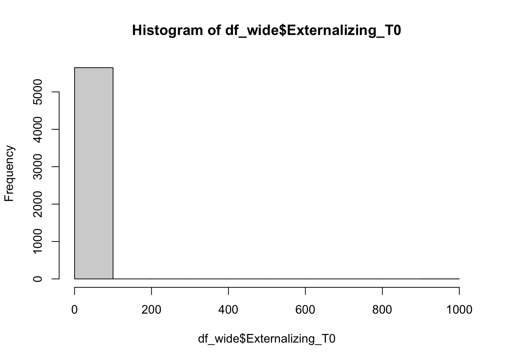
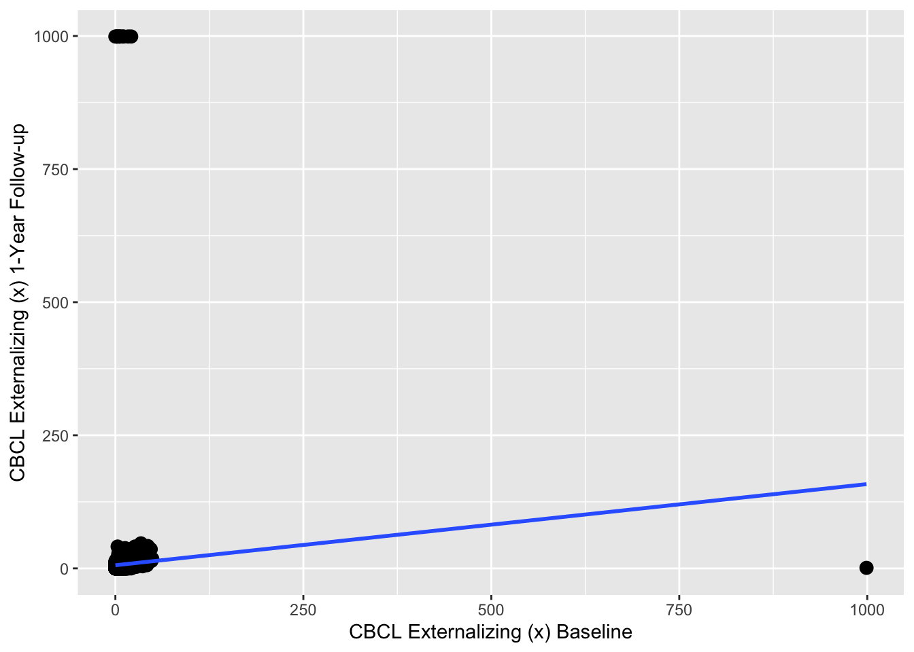
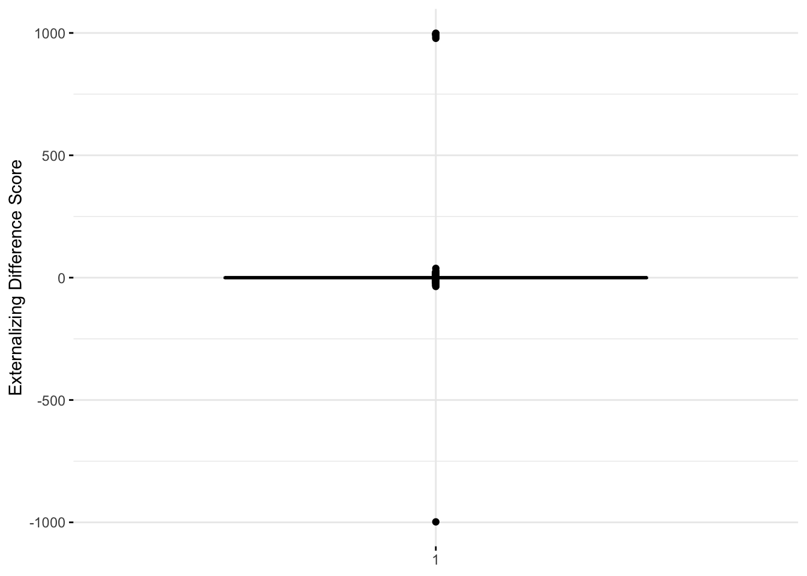
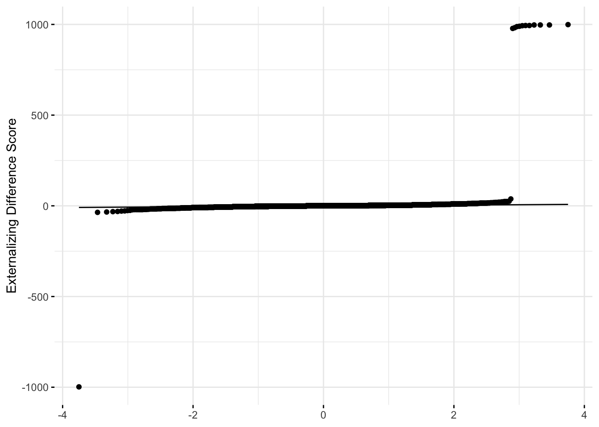

# Install necessary packages (if not already installed)
if (!("lme4" %in% installed.packages())) install.packages("lme4")
if (!("lmerTest" %in% installed.packages())) install.packages("lmerTest")
if (!("tidyverse" %in% installed.packages())) install.packages("tidyverse")
if (!("ggpubr" %in% installed.packages())) install.packages("ggpubr")2 Difference Scores_Basic Example
#Load packages
library(lme4)Loading required package: Matrixlibrary(lmerTest)
Attaching package: 'lmerTest'The following object is masked from 'package:lme4':
lmerThe following object is masked from 'package:stats':
steplibrary(tidyverse)── Attaching packages
───────────────────────────────────────
tidyverse 1.3.2 ──✔ ggplot2 3.4.0 ✔ purrr 1.0.0
✔ tibble 3.1.8 ✔ dplyr 1.0.10
✔ tidyr 1.2.1 ✔ stringr 1.5.0
✔ readr 2.1.3 ✔ forcats 0.5.2
── Conflicts ────────────────────────────────────────── tidyverse_conflicts() ──
✖ tidyr::expand() masks Matrix::expand()
✖ dplyr::filter() masks stats::filter()
✖ dplyr::lag() masks stats::lag()
✖ tidyr::pack() masks Matrix::pack()
✖ tidyr::unpack() masks Matrix::unpack()library(ggpubr)df_wide<- read_csv("./df_wide.csv")Rows: 5649 Columns: 27
── Column specification ────────────────────────────────────────────────────────
Delimiter: ","
chr (1): ids
dbl (26): SiteID, FamilyID, Sex, Age, Race_White, Race_Black, Race_Hispanic,...
ℹ Use `spec()` to retrieve the full column specification for this data.
ℹ Specify the column types or set `show_col_types = FALSE` to quiet this message.str(df_wide)spc_tbl_ [5,649 × 27] (S3: spec_tbl_df/tbl_df/tbl/data.frame)
$ ids : chr [1:5649] "NDAR_INV003RTV85" "NDAR_INV00CY2MDM" "NDAR_INV00HEV6HB" "NDAR_INV00LH735Y" ...
$ SiteID : num [1:5649] 7 21 13 4 12 5 18 7 20 17 ...
$ FamilyID : num [1:5649] 7232 4495 1918 4973 6826 ...
$ Sex : num [1:5649] 1 2 2 2 2 1 2 1 1 2 ...
$ Age : num [1:5649] 10 10 10 9 10 10 9 9 10 10 ...
$ Race_White : num [1:5649] 1 1 0 0 0 0 1 1 1 1 ...
$ Race_Black : num [1:5649] 0 0 1 0 0 0 0 0 0 0 ...
$ Race_Hispanic : num [1:5649] 0 0 0 1 0 0 0 0 0 0 ...
$ Race_Asian : num [1:5649] 0 0 0 0 0 0 0 0 0 0 ...
$ Race_Other : num [1:5649] 0 0 0 0 1 1 0 0 0 0 ...
$ ParentIncome : num [1:5649] 5 6 999 4 1 6 7 8 9 7 ...
$ ParentEducation : num [1:5649] 13 15 13 13 11 12 19 21 18 18 ...
$ IQ : num [1:5649] 51 40 52 40 36 49 999 63 19 44 ...
$ FlankerTest : num [1:5649] 52 51 40 39 44 34 999 40 30 38 ...
$ PubertalDevelopment_F : num [1:5649] 3 999 999 999 999 999 999 1 4 999 ...
$ PubertalDevelopment_M : num [1:5649] 999 2 3 1 3 999 2 999 999 2 ...
$ MatureVideoGames : num [1:5649] 1 1 2 1 2 1 1 1 1 1 ...
$ Weekly_Gaming_Hours_T0: num [1:5649] 7 7 3.5 11 28 28 1.75 4.5 10.5 2.25 ...
$ Weekly_Gaming_Hours_T1: num [1:5649] 7 9 28 28 4 3 7 7 8 9 ...
$ Weekly_Gaming_Hours_T2: num [1:5649] 7 7 28 11 18 0 0 2 0 28 ...
$ Aggression_T0 : num [1:5649] 0 15 5 2 14 17 0 5 0 5 ...
$ Aggression_T1 : num [1:5649] 0 18 5 2 9 18 0 8 10 0 ...
$ Aggression_T2 : num [1:5649] 999 20 9 3 8 999 0 999 6 1 ...
$ Externalizing_T0 : num [1:5649] 1 18 7 2 20 21 0 7 0 5 ...
$ Externalizing_T1 : num [1:5649] 1 22 10 2 12 25 0 10 12 0 ...
$ Externalizing_T2 : num [1:5649] 999 25 14 3 11 999 0 999 7 1 ...
$ Internalizing_T0 : num [1:5649] 1 5 6 4 2 17 0 5 4 4 ...
- attr(*, "spec")=
.. cols(
.. ids = col_character(),
.. SiteID = col_double(),
.. FamilyID = col_double(),
.. Sex = col_double(),
.. Age = col_double(),
.. Race_White = col_double(),
.. Race_Black = col_double(),
.. Race_Hispanic = col_double(),
.. Race_Asian = col_double(),
.. Race_Other = col_double(),
.. ParentIncome = col_double(),
.. ParentEducation = col_double(),
.. IQ = col_double(),
.. FlankerTest = col_double(),
.. PubertalDevelopment_F = col_double(),
.. PubertalDevelopment_M = col_double(),
.. MatureVideoGames = col_double(),
.. Weekly_Gaming_Hours_T0 = col_double(),
.. Weekly_Gaming_Hours_T1 = col_double(),
.. Weekly_Gaming_Hours_T2 = col_double(),
.. Aggression_T0 = col_double(),
.. Aggression_T1 = col_double(),
.. Aggression_T2 = col_double(),
.. Externalizing_T0 = col_double(),
.. Externalizing_T1 = col_double(),
.. Externalizing_T2 = col_double(),
.. Internalizing_T0 = col_double()
.. )
- attr(*, "problems")=<externalptr> hist(df_wide$Externalizing_T0)
# Compute difference score based on CBCL Externalizing subscale scores at baseline (t1) and 1-Year Follow-up (t2)
df_wide$diffscore = df_wide$Externalizing_T1 - df_wide$Externalizing_T0
#Compute statistical summaries for the difference score variable
summary(df_wide$diffscore) Min. 1st Qu. Median Mean 3rd Qu. Max.
-998.000 -2.000 0.000 1.498 1.000 999.000 #Scatterplot to visualize relationship between t1 & t2 data used to create difference score
scatterplot <- ggplot (df_wide, aes(x = Externalizing_T0, y = Externalizing_T1)) + geom_point(size = 3) + geom_smooth(method = lm, se = F) +
xlab("CBCL Externalizing (x) Baseline") +
ylab("CBCL Externalizing (x) 1-Year Follow-up")
suppressWarnings(print(scatterplot))`geom_smooth()` using formula = 'y ~ x'
#One-sample t-test to determine whether the average difference score is significantly different than 0.
result <- t.test(df_wide$diffscore, mu = 0, alternative = "two.sided")
# Print the results
result
One Sample t-test
data: df_wide$diffscore
t = 2.4509, df = 5648, p-value = 0.01428
alternative hypothesis: true mean is not equal to 0
95 percent confidence interval:
0.2997325 2.6954879
sample estimates:
mean of x
1.49761 #boxplot
library(ggpubr)
diffscore_boxplot <- ggboxplot(df_wide$diffscore,
ylab = "Externalizing Difference Score", xlab = FALSE,
ggtheme = theme_minimal())
suppressWarnings(print(diffscore_boxplot))
#Shapiro-Wilk test and normality (Q-Q) plot (visualization of correlation between a given sample and the normal distribution)
shapiro.test(df_wide$diffscore[0:5000])
Shapiro-Wilk normality test
data: df_wide$diffscore[0:5000]
W = 0.057242, p-value < 2.2e-16library("ggpubr")
qqplot <- ggqqplot(df_wide$diffscore,
ylab = "Externalizing Difference Score", xlab = FALSE,
ggtheme = theme_minimal())
suppressWarnings(print(qqplot))